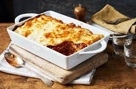

Lasagne
Home

Enjoy a homemade family classic
Ingredients
Serves 4
For the filling:
- 500g mince
- 1 onion
- 500g passata
- Beef stock
For the bechamel sauce:
- 50g butter
- 50g plain flour
- 500ml milk
Method
- Fry the onions and mince together until onions are softened and mince is browned.
- Add the beef stock and passata and leave to simmer.
- Start the bechamel by melting the butter and stirring in the flour until it makes a smooth paste.
- Slowly add the milk, stirring continuously, until all the milk is combined and you have a smooth sauce.
- Layer the filling, pasta sheets, and bechamel sauce in a baking dish.
- Bake at 200 degrees for 25 mins